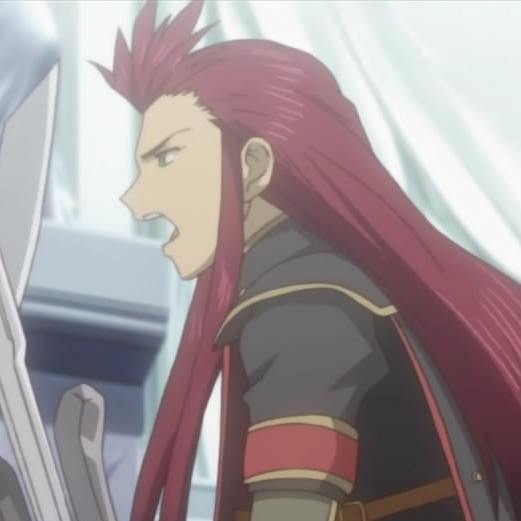

About Asch:
Asch is a God General in the world of Tales of the Abyss. He is a man who has seen great war and bloodshed at a young age. He has earned the name of Asch the Bloody for his ruthlessness in the battlefield.
Asch in the intro of Tales of the Abyss
Asch's Characteristics
- He has fire red hair
- Is a seasoned war veteran
- Dedication and love to his country
Reluctant Allies
As he is only a secondary character in the game, he is not able to form bonds with a lot of the main party members. There are a few people in the game that reluctantly decide to work with him for the ultimate goal. Click on the links below for their info.